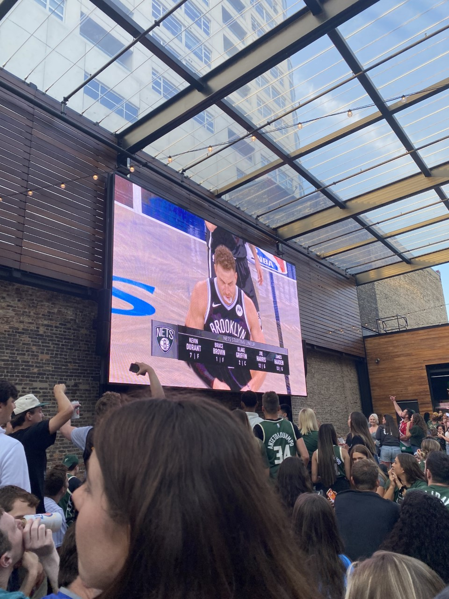
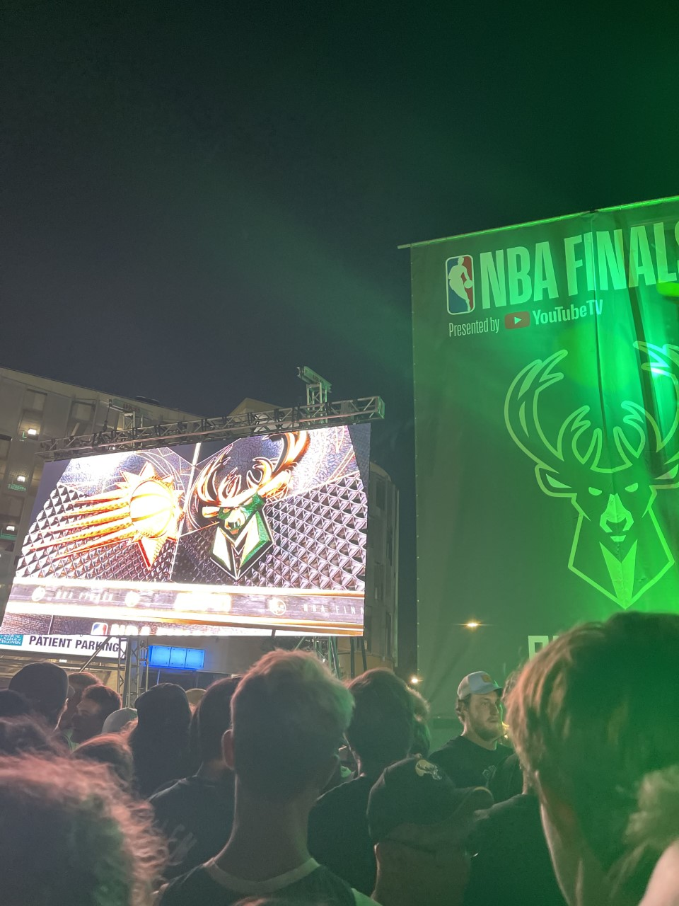
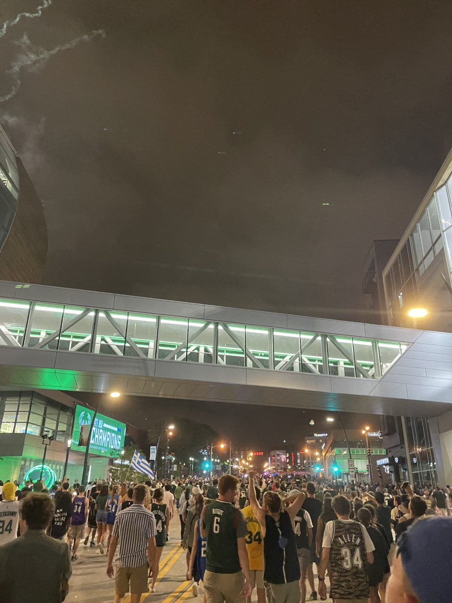

I am lucky enough to now have witnessed to championship teams. The Bucks have been contenders now for multiple seasons, and being able to watch them dominate in the playoffs in 2021 NBA Finals was awesome. While I wasn't able to attend any games at Fiserv Forum, I was able to visit Deer District multiple times during their 2021 playoff run.
This series was against the Brooklyn Nets. The Bucks won the series 4-3.
This was the Finals series vs the Phoenix Suns. This photo was taken in game 6 when the Bucks were up in the series 3-2.
This photo was taken in the street after the Bucks defeated the Suns to win the Finals. It is a great example of the atmosphere in Wisconsin sports.
